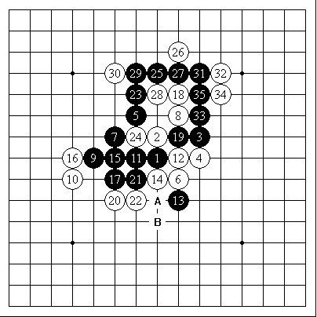
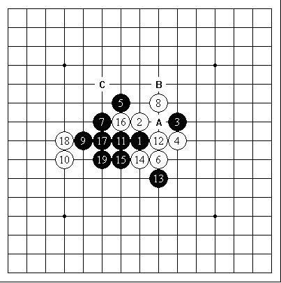
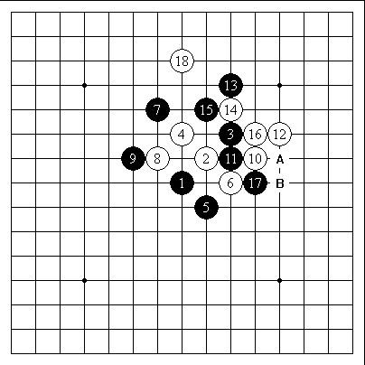
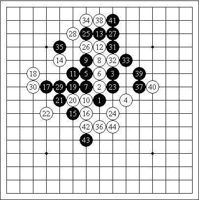

顾炜老师与小寒同学的三局棋评
#1 顾炜老师与小寒同学的三局棋评 作者：右岸之风 发表时间：2012-3-18 9:16:39
与小寒同学的三局棋评
(作者：顾炜 转自我是人间惆怅客百度空间)
前几天同小寒下了3盘棋，有点意思的。可能对于很多想进一步提高自身水平的爱好者来说，可以借鉴一些的。简要评述一下。
第一盘是我开局，残月。对方没有交换，有点出乎我的意料。然后给出的白4也是有点意料之外。记忆中差不多有近10年在这个布局中有人主动和我下这个白4了。黑5的打点还是比较多的，实战给出的是6和5位的传统一打点和二打点。白6之后，黑7是最强的应对。白8给我来了一个对攻的局面，难道对方要考验我的VCT能力？黑9开始是比较正常的VCT战术了，但是我走的太复杂了，到黑35取胜。白22-24，黑23-A，黑25-14，黑27-B胜。

黑：顾炜 VS 白：小寒（不交换） 5A=6 黑35白投了
其实，根据参考图的走法，黑棋取胜非常简洁。白16-A，黑17-B，白18-16，黑19-C双杀胜。这个对自己来讲是需要调整的一个方面。

参考图
第2盘对局是小寒布局，长星。我没有交换，也没有变化到疏星，而是直接下了长星最强的白4。想不到对方给出了实战的5和6的打点。记忆中长星局针对这个最强的白4，黑5只有2个点可以提供，一是6位，二是7位。所以实战是必败的点。但是很多以前拆解过的变化，现在有些模糊和遗忘了，因此通过勉强的回忆和对棋的分析，觉得白6必须活三。黑7是最强的手段，白8感觉也是最有效的等着。黑9有点点意外，这样的棋型，对黑棋来讲实在是太悲催了，什么联系都没有。白10是继续拓展的一手，其实这个时候下在A位，白棋就是简单必胜了。实战的白棋，黑棋还可以稍微挣扎一下。黑11意图切断白棋的联系，此时白棋也没有什么好的攻击手段，于是白12是比较有效地等着。黑13的防御多少显得有点点怪异，白14是求稳的想法，其实这个时候白14-B，是更加简洁明了的手段。黑15的防御有点手段重复，子力效率很低。白16开始就是简单的追下抓三三取胜。

黑：小寒 VS 白：顾炜（不交换）5A=6 白18黑投了
第三盘继续我开局，为了看看小寒的攻击能力，布局溪月。这次小寒终于提出交换了。白4是比较少见的防御，黑5除了实战一个点外，还有一个是7位。白6是强防，黑7之后一度有点眼瞎。不过后来发现白8是比较强的手段，还能撑着下。黑9开始的着法还是挺强硬的，小寒渴求攻击的想法一览无遗。毕竟前两盘有点窝火，一点进攻的机会都没拿到就挂了，这个肯定是无法接受的。黑15、17是连续的做棋，很漂亮。白16是意图分隔两边联系的防御，白18可能是局部最强的防御了。黑19感觉有点着急了，似乎单走22位更好，这个时候没有看到杀的时候，还是做棋拓展空间的好。白22后我就觉得压力减轻了许多，因为左下的局部已经防御干净了，而且左下同左上的联系也因为14、18两颗子的存在而无法组织起好的进攻来。黑23再从右边着手攻击，其实这个时候的思路还是应该先手拓展空间，结果到白34失先之后，黑棋就再也没有机会翻身了。白44黑棋挂了。

黑：顾炜 VS 白：小寒（交换） 5A=7 白44黑投了
［此帖子
已被 右岸之风 在 2012-3-18 9:39:59 编辑过］
［此帖子已被 右岸之风 在 2012-3-18 9:44:10 编辑过］
#2 Re:顾炜老师与小寒同学的三局棋评 作者：自来水 发表时间：2012-3-18 9:31:54
图挂了、、、#3 Re:自来水【==Re:顾炜老师与小寒同学的三局棋评==】 作者：右岸之风 发表时间：2012-3-18 9:37:35
引用：好吧，重新发
原文由 自来水 发表于 2012-3-18 9:31:54 :
图挂了、、、

#4 Re:顾炜老师与小寒同学的三局棋评 作者：右岸之风 发表时间：2012-3-18 9:44:46
已重发图。。看不到滴再说下
#5 Re:顾炜老师与小寒同学的三局棋评 作者：自来水 发表时间：2012-3-18 11:59:25
顾老师最近也有时间写文章啦~
我来乱评评
第一局其实老顾已经算是被考到了
这两步连冲胜没看到是神马情况？
第二局，12手很漂亮，后面很好很强大
第三局..这里必胜走法很多，没有讨论的必要。个人认为1黑11活三走软
实战17非常漂亮的一手做V，左边的子力已经基本都联系到了，看白18唯一防就知道黑棋的希望很大。偏偏，黑19，这19是个相当没有道理的走法，既没有明显的进攻，也不见得占了什么要点。除了19-22外，19-42也是非常犀利的走法，23往后,黑棋的走法就比较...逞强了，其实这里黑棋能控制局面就好，胜的希望已经不大...后面白棋...很好很强大
［此帖子已被 自来水 在 2012-3-18 12:03:15 编辑过］
［ 右岸之风 于 2012-3-18 12:46:33 时花20金币送鲜花一朵］
［ 右岸之风 于 2012-3-18 12:46:35 时花20金币送鲜花一朵］
［ 右岸之风 于 2012-3-18 12:46:37 时花20金币送鲜花一朵］
［ 右岸之风 于 2012-3-18 12:46:39 时花20金币送鲜花一朵］
［ 右岸之风 于 2012-3-18 12:46:42 时花20金币送鲜花一朵］
［ 右岸之风 于 2012-3-18 12:46:44 时花20金币送鲜花一朵］
［ 右岸之风 于 2012-3-18 12:46:46 时花20金币送鲜花一朵］
［ 右岸之风 于 2012-3-18 12:46:48 时花20金币送鲜花一朵］
［ 右岸之风 于 2012-3-18 12:46:51 时花20金币送鲜花一朵］
［ 右岸之风 于 2012-3-18 12:46:53 时花20金币送鲜花一朵］
#6 Re:顾炜老师与小寒同学的三局棋评 作者：右岸之风 发表时间：2012-3-18 12:47:23
谢谢自来水的棋评，吃饭先，回来看
#7 Re:顾炜老师与小寒同学的三局棋评 作者：右岸之风 发表时间：2012-3-18 16:47:25
看了又看，表示看不懂~~·~~~
［ 自来水 于 2012-3-18 17:22:24 时花20金币送鲜花一朵］
［ 自来水 于 2012-3-18 17:22:27 时花20金币送鲜花一朵］
［ 自来水 于 2012-3-18 17:22:29 时花20金币送鲜花一朵］
#8 Re:顾炜老师与小寒同学的三局棋评 作者：自来水 发表时间：2012-3-18 17:22:03
 大概是我语言组织出了问题，退还LZ三朵花
大概是我语言组织出了问题，退还LZ三朵花
［此帖子已被 自来水 在 2012-3-18 17:24:02 编辑过］
#9 Re:自来水【==Re:顾炜老师与小寒同学的三局棋评==】 作者：右岸之风 发表时间：2012-3-18 17:40:02
引用：
原文由 自来水 发表于 2012-3-18 17:22:03 :
［此帖子已被 自来水 在 2012-3-18 17:24:02 编辑过］
哈哈。。。。。不是你语言组织问题啊。。。
脚得每个字都认识。。连起来就不知道啥意思 。。语文很差滴说。
。。语文很差滴说。
那个，那个，菜鸟和高手不是一个时空的。。。脱线思维。。捂脸
［此帖子已被 右岸之风 在 2012-3-18 17:58:04 编辑过］
#10 Re:顾炜老师与小寒同学的三局棋评 作者：釣鱼岛岛主 发表时间：2012-3-18 23:31:54
炫魂皇 寒姐吗？#11 Re:顾炜老师与小寒同学的三局棋评 作者：小小亦默 发表时间：2012-3-20 16:31:37
 表示看不动
表示看不动
#12 Re:顾炜老师与小寒同学的三局棋评 作者：可爱梦 发表时间：2012-3-21 2:03:55
蛮好的、看的懂~#13 Re:顾炜老师与小寒同学的三局棋评 作者：炫魂皇焱 发表时间：2012-3-23 9:43:41
很悲催的局 怪自己和老大对 太急躁了。。。［ 天籁之琴 于 2012-3-23 12:03:03 时花20金币送鲜花一朵］
［ 天籁之琴 于 2012-3-23 12:03:06 时花20金币送鲜花一朵］
#14 Re:炫魂皇焱【==Re:顾炜老师与小寒同学的三局棋评==】 作者：天籁之琴 发表时间：2012-3-23 12:02:38
哈 第一次看见小寒来这 所以啊 你的急躁性子要改下，不然会下的更好，加油#15 Re:天籁之琴【==Re:炫魂皇焱【==Re:顾炜老师与小寒同学的三局棋评==】==】 作者：釣鱼岛岛主 发表时间：2012-3-23 23:46:05
引用：
原文由 天籁之琴 发表于 2012-3-23 12:02:38 :
哈 第一次看见小寒来这 所以啊 你的急躁性子要改下，不然会下的更好，加油
我给她申请滴号
#16 Re:天籁之琴【==Re:炫魂皇焱【==Re:顾炜老师与小寒同学的三局棋评==】==】 作者：萧何 发表时间：2012-3-31 15:11:20
引用：握个手,加油，以砍老大为己任
原文由 天籁之琴 发表于 2012-3-23 12:02:38 :
哈 第一次看见小寒来这 所以啊 你的急躁性子要改下，不然会下的更好，加油